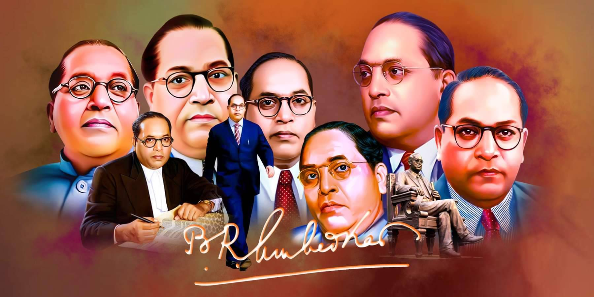

Dr.BR.Ambedkar
Architect of Indian Constitution

Chairman of the Drafting Committee of the Constituent Assembly and played an important role in framing the Indian Constitution
Few lines about Ambedkar
- is most important contributions were in areas of fundamental rights, strong central government and protection of minorities
- He emphasized 'democracy as a way of life.
- n 1936, Babasaheb Ambedkar founded the Independent Labour Party.
- His birthday, April 14, has been christened ‘Ambedkar Jayanti’ or ‘Bhim Jayanti’ and is celebrated as a public holiday.
- Ambedkar published his book Annihilation of Caste on 15 May 1936.
- He was independent India's first Minister of Law and Justice
- He campaigned against social discrimination towards the untouchables (Dalits).
- He resigned from cabinet in 1951, when parliament stalled his draft of the Hindu Code Bill.
- The Ambedkar Jayanti is celebrated every year on April 14 to pay tribute to Dr Ambedkar's contribution to the Indian society and to remember his teachings and ideals.
- Dr Ambedkar was a strong advocate of social justice, equality
-
Relevance of Ambedkar in Present Times:
Caste system against which Ambedkar fought throughout his life is still a contested terrain.
Dalits continue to bear the brunt of violence and discrimination.
But the social and economic justice that is due to the Dalits and tribals is still elusive..
Constitutionally guaranteed reservation for education and employment has no doubt made a mark. - Ambedkar died in his sleep on 6 December 1956 at his home in Delhi
- Summary:
Ambedkar's legacy as a socio-political reformer had a deep effect on modern India.In post-Independence India, his socio-political thought is respected across the political spectrum.
“Be Educated, Be Organised and Be Agitated.”
--Dr.BR.Ambedkar